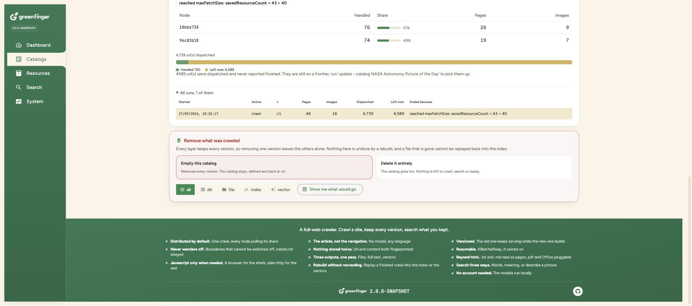

Greenfinger is a distributed web crawler for the JVM. Point it at a url and it crawls the whole site, keeps every page, every picture and every version, and writes plain files, a full text index and a vector collection in one pass. Every node runs the same jar, so there is no coordinator to deploy and nothing to provision before the first crawl.
Greenfinger = a crawler that never leaves the site + three outputs that stack + search by words, by meaning, or by describing a picture.

A rebuild in progress. v1 keeps answering searches while v2 is being written, and each node reports what it pulled.
No database, no search server, no API key and no model download before the first crawl. H2 and an embedded Lucene index are the defaults, and the embedding models run as ONNX inside the crawler's own process.
One url dispatched is one call to whichever node owns it. No central queue, no scheduler, no leader in the fetch path. Start another process on the same cluster name and it joins a crawl already running.
Files on disk or in MinIO, a full text index in Lucene or Elasticsearch, and vectors in Lucene, Qdrant, Weaviate or Elasticsearch. Any combination, chosen per catalog.
The database keeps metadata only, so the index and the vectors rebuild from the files. Lost an index, changed an analyzer, or decided late that you want embeddings? None of it touches the site again.
Two boundary rules run before anything else and cannot be switched off: the registrable domain has to match, and every url has to sit under the start url. robots.txt is obeyed on top of that.
Pictures from <img>, srcset and og:image,
filtered by size and type. Links to documents recorded on every crawl, with text, markdown
and csv read out of the box and pdf one bean away.
The frontier is on disk, so a crawl killed halfway carries on. A rebuild opens a new version beside the old one, and search keeps answering from the old one until the new one finishes.
One box, three modes. The embedding models are local, so meaning and picture search need no account and no network.
Exact terms, highlighted, with detail pages ranked above listings. Deep paging by cursor, past the ten thousandth result Elasticsearch refuses.
breadFinds the page that answers the question even when it never uses the words. The top answer to this one is a supernova remnants page that never contains the sentence.
what happens when a star runs out of fuelDescribe what you want to see rather than what the caption might say. This is matched against the picture itself, not the filename and not the alt text.
a bright spiral galaxy against black sky
Pictures, ranked by how well each one matches the description.
An Angular console on the same REST api your own code would call. One address in front of every node, so the browser talks to the cluster rather than to one process.
A site, the rules for crawling it, and every version it produced, with live progress on the card while it runs.
Pages kept against urls seen, where every url went, throughput, a row per node, and the report of every finished run.
Every row in crawl order with its file paths and content hash. Members, roles, heap, and every health check the node makes.

Two nodes on one crawl, 51% and 49%. The totals above are the cluster's.
The crawler needs nothing else running. Metadata goes into an H2 file, pages go under
./data, and a live dashboard is drawn while it works.
# clone and build git clone https://github.com/paganini2008/greenfinger cd greenfinger/backend && mvn clean install # crawl a site, right now cd ../deploy ./greenfinger-cli.sh --cluster=demo crawl \ --url=https://books.toscrape.com # or bring up the nodes and the console ./run-local.sh # http://localhost:9700 GF_NODES=3 ./run-local.sh # three nodes, one crawl # a terminal on those nodes ./greenfinger-shell.sh --cluster=greenfinger-local
Reference for operators, and the seams for developers.
What it does, how to run it, every setting a catalog takes, and the REST api.
ReferenceThe crawl verbs, every command at the prompt, and how a terminal attaches to a cluster.
ReferenceHow the system is shaped and why, with diagrams and the numbers the decisions were made on.
GuideEvery seam, what ships behind it, and how to put your own there. Extractors, filters, outputs, stores and document parsers.
ReferenceOne per database, generated from the entities, for creating the schema yourself instead of letting Hibernate do it.
ReferenceWhat changed in 2.0, and what an upgrade from 1.x involves.